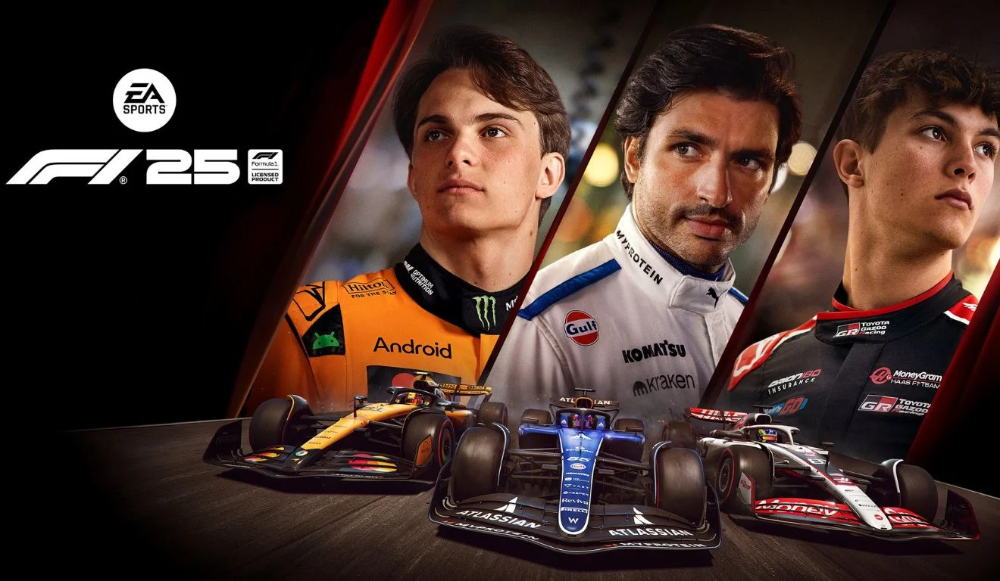

A EA Sports é, há décadas, um dos maiores nomes quando o assunto é jogo de esporte. A marca nasceu com a ideia de transformar modalidades reais em experiências digitais capazes de emocionar e conectar milhões de jogadores. Não se trata apenas de simular, mas também capturar o sentimento, a rivalidade, a superação, e a paixão.
Com o passar dos anos, a EA Sports construiu franquias que se tornaram praticamente parte da cultura esportiva moderna. Sua força está na tecnologia de ponta, parcerias oficiais com ligas e atletas, e atualizações constantes que mantêm cada jogo vivo e em evolução, entregando sempre o realismo mais próximo do que vemos na TV ou nos estádios ou no autódromo.
Hoje, a marca continua sendo referência mundial, unindo esporte, inovação e entretenimento digital como poucas empresas conseguem.

O EA Sports FC 26 representa mais um passo na construção da nova era do futebol digital. Desde que a série deixou o nome FIFA para trás, a EA vem buscando reforçar a identidade própria, entregando um jogo que mistura autenticidade, emoção e tecnologia. No FC 26, as partidas parecem mais vivas: os jogadores se movimentam com mais naturalidade, a física da bola é mais imprevisível e o ritmo do jogo lembra mais o futebol real, onde cada detalhe faz diferença. O comportamento dos atletas, o estilo dos clubes e até o clima nos estádios foram trabalhados para criar uma atmosfera esportiva genuína. Modos clássicos como o Carreira, Temporadas e principalmente o Ultimate Team receberam ajustes importantes, oferecendo mais liberdade, opções estratégicas e mecânicas que aproximam o jogador da sensação de comandar um clube de verdade. Para quem é apaixonado pelo esporte, FC 26 não é apenas um jogo: é uma porta de entrada para viver o futebol todos os dias.
NFL 26 traduz muito bem o espírito do futebol americano: força, tática e emoção. O sistema de passes ficou mais preciso, e a inteligência defensiva foi refinada, exigindo do jogador leitura de jogo e decisões rápidas — assim como acontece na NFL real. O modo Franchise, um favorito dos fãs, ganhou ferramentas de gestão mais completas, permitindo controlar contratações, treinos, esquemas táticos e evolução dos atletas. Já o Ultimate Team permanece como um espaço competitivo onde cada jogador monta sua equipe dos sonhos. Para quem acompanha a liga americana ou gosta de jogos táticos, NFL 26 entrega uma experiência profunda e envolvente.


F1 25 carrega a responsabilidade de representar um dos esportes mais exigentes e tecnológicos do mundo. E a EA Sports entrega um jogo que realmente passa a sensação de estar dentro de um carro de Fórmula 1. A física dos veículos foi aperfeiçoada, e o comportamento dos pneus, da aerodinâmica e da aderência é tão detalhado que cada curva exige precisão. Qualquer erro faz diferença — exatamente como acontece nas pistas reais. O jogo traz todos os pilotos, equipes e circuitos, além de modos como o Carreira de Piloto e o My Team, onde você cria sua própria equpe e administra todo o processo. Para quem gosta de velocidade, estratégia e simulação autêntica, F1 25 é a experiência mais completa que existe.
O UFC 5 é o jogo da EA Sports que mais se aproxima do realismo bruto do esporte que representa. Os lutadores não são apenas modelos 3D; eles reagem, cansam, sangram e se adaptam ao combate. O jogo dá destaque ao lado estratégico do MMA: escolher a distância certa, controlar o octógono, e saber a hora de buscar um nocaute ou uma finalização. O modo carreira foi reformulado para acompanhar o crescimento de um atleta desde as lutas menores até o cinturão, e os modos online trazem desafios constantes para quem gosta de competir. É uma experiência intensa que mistura técnica, emoção e brutalidade na medida certa.